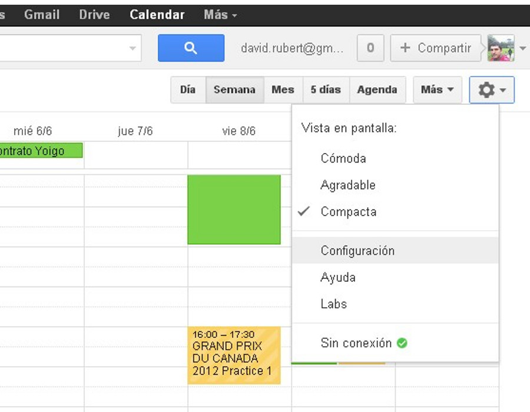
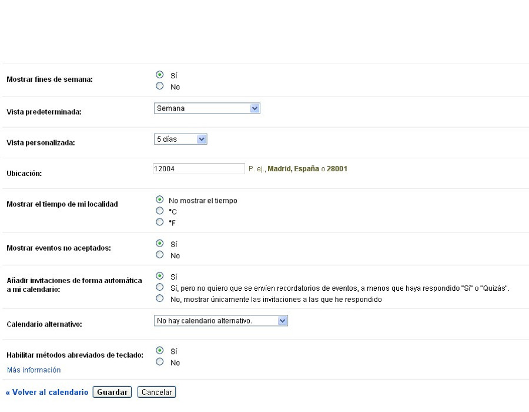
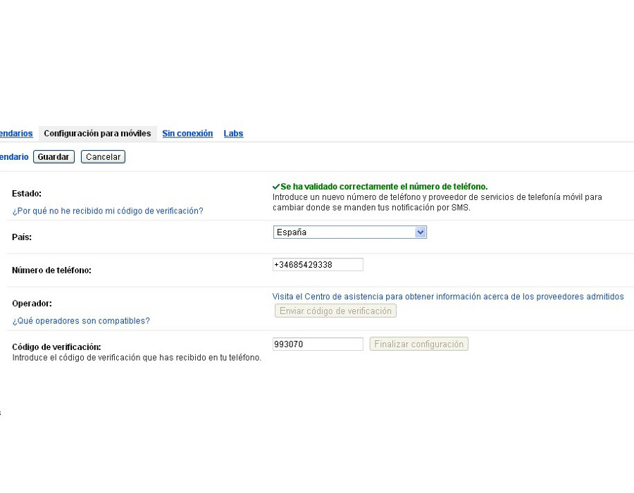
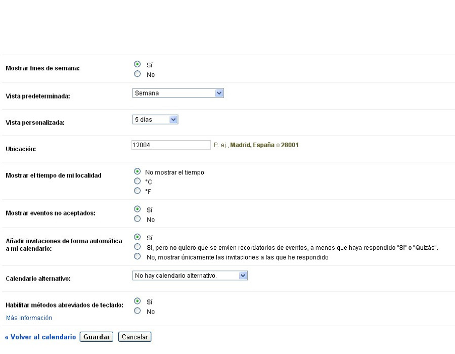
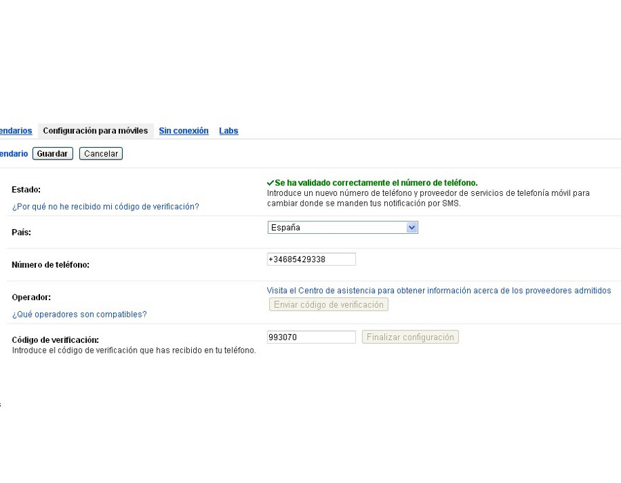
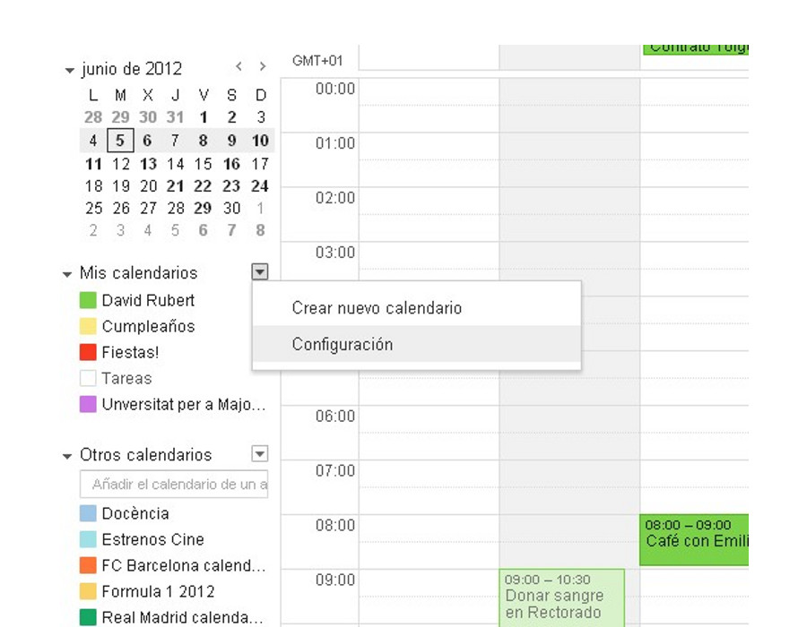

Trabajo colaborativo con Google Calendar
google
calendar
Gestión avanzada de calendarios
Apreta la tecla → para avanzar.

Google Calendar

Ya conocemos el funcionamiento de los eventos, y las invitaciones a otros usuarios.
Veamos ahora otra parte esencial que nos quedaba, que es la gestión de calendarios, el calendario especial de tareas y los calendarios que nos han compartido o a los que nos hemos suscrito.
Entre estas funciones se incluye una parte fundamental como es la compartición de calendarios.
Gestión
de calendarios
Apreta la tecla → para avanzar.
Configuración global

Desde la configuración global de la aplicación podemos personalizar algunos parámetros de la aplicación para ajustarlos a nuestros gustos.
- Configuración general. Idioma, zona horaria, duración predeterminada de un evento, ubicación, tiempo de mi localidad, etc.
- Configuración de teléfono móvil. Si queremos que nos avise gratuitamente por SMS.

 



Cambia de foto con las teclas: ↑ y ↓
Práctica
Configuración global
Apreta la tecla → para avanzar.
Configuración global

- Accede a la configuración global, y activa la visualización del tiempo en el calendario en formato grados Celsius..
- Accede a la configuración de móviles, y establece tu número de movil para que te pueda mandar notificaciones SMS.
- Visualiza la lista de gestión de calendarios.
Configuración de calendarios
Apreta la tecla → para avanzar.
Propiedades de un calendario

Tener calendarios separados para diferentes eventos
nos permite gestionar mejor nuestra información personal, y sobre todo,
gestionar mejor la compartición de eventos. Veamos cuáles son las
principales propiedades que identifican un calendario.
- Color.
- Visualización. Podemos ver sólo un calendario,
u ocultarlo de la representación
- Alertas.
- Compartición.

Apreta la tecla → para avanzar.
Configuración de calendarios
Podemos realizar una configuración personalizada de cada uno de nuestros calendarios, lo que nos permitirá personalizarles los siguientes atributos:
- Nivel de compartición. Nos puede interesar que un calendario sea totalmente privado, pero otro que sea público, o compartido con algunas personas.
- Alertas. Las alertas por defecto del calendario podemos personalizarlas.



Cambia de foto con las teclas: ↑ y ↓
Práctica
Configuración de calendarios
Apreta la tecla → para avanzar.
Configuración de calendarios
- Cambia el nivel de compartición de tu calendario, hazlo público sólo con información de libre/ocupado. (Sólo si estás interesada/o)
- Define las alertas de los eventos añadidos a tu calendario principal, por SMS 1 hora antes.
- Observa cómo el profesor comparte un calendario con todas/os vosotras/os. Visualiza el nuevo calendario.
Tareas
El calendario especial de "Tareas"
Apreta la tecla → para avanzar.
El calendario "Tareas"
Es un tipo de calendario especial que nos representa
una lista de tareas pendientes, que no son fácilmente clasificables en
un calendario. Características:
- Es una especie de buzón de entrada de eventos.
Lista de eventos sin fecha de inicio, aunque con posible fecha de
fin.
- Podemos crear listas de tareas. Para
clasificar de alguna manera estos eventos especiales.
Apreta la tecla → para avanzar.
Práctica
Calendario "Tareas"
Apreta la tecla → para avanzar.
Añadir tareas a la cola
- Abre el calendario "Tareas".
- Añade una tarea pendiente a la cola de tareas.
Otros Calendarios
Apreta la tecla → para avanzar.
Otros calendarios
Calendarios que no tenemos en propiedad, pero sobre
los que queremos tener accesos en modo lectura (o lectura/escritura).
Veamos sus características:
- Formato standard iCalendar. Cualquier
calendario que cumpla este estándar puede ser añadido a nuestra
vista de calendarios.
- Calendarios compartidos. Cuando alguien nos
comparta un calendario lo visualizaremos aquí.
- Lectura/escritura. Depende de los permisos que
tengamos podremos sólo leer, o leer y escribir sobre el calendario.


Apreta la tecla → para avanzar.
Calendarios interesantes
Es la manera más sencilla de suscribirse a
calendarios, ya que sin salir de la aplicación podemos navegar y
suscribirnos a aquellos calendarios que más nos interesen:
- Lista mantenida por Google. Con tres
categorías principales: Fiestas, Deportes, Otros.
- Poco aprovechada. Google decidió dejar de
mantener una lista de calendarios públicos más extensa sobre el
2010, para limitarse a la lista actual.
Apreta la tecla → para avanzar.
Práctica
Otros calendarios
Apreta la tecla → para avanzar.
Otros calendarios
- Accede a la zona de Explorar calendarios, y añade algún calendario interesante: de deportes, fases lunares, etc.
- Anula la suscripción a aquellos calendarios extra que has añadido y que no te interesen.
Google Labs
Apreta la tecla → para avanzar.
Google Labs
Existen algunas funciones activables en Google Calendar, pero que no quieren ponerse a disposición de todo el mundo, porque no se consideran lo suficientemente importantes, o porque todavía estan en fase de pruebas. Son las llamadas Google Labs, y podemos activar aquellas funcionalidades que más nos interesen dentro de esta categoría. Ejemplos:
- Ocultar sección de mañana y noche.
- Archivos adjuntos en los eventos.
Cambia de foto con las teclas: ↑ y ↓
Práctica
Google Labs
Apreta la tecla → para avanzar.
Google Labs
- Activa y prueba la funcionalidad de ocultar sección de mañana y noche desde Google Labs.
- Activa y prueba la funcionalidad de añadir adjuntos desde Google Labs.